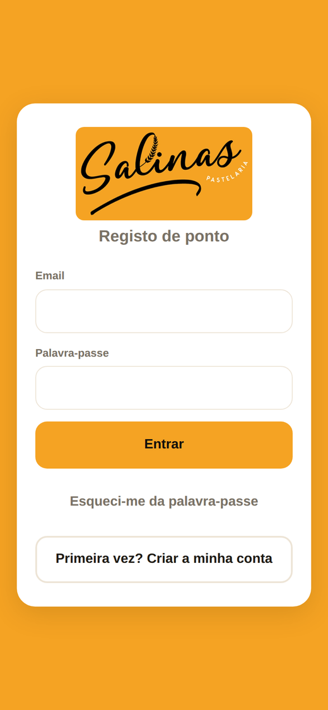
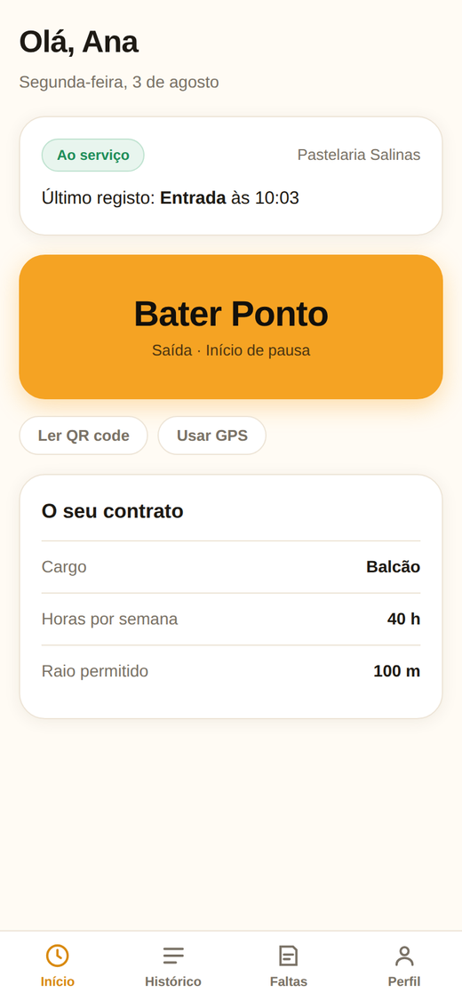
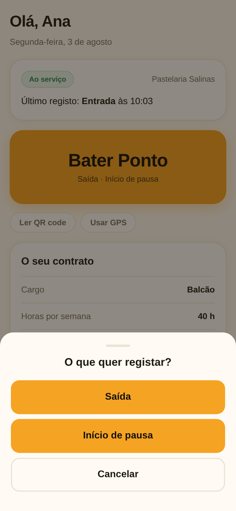
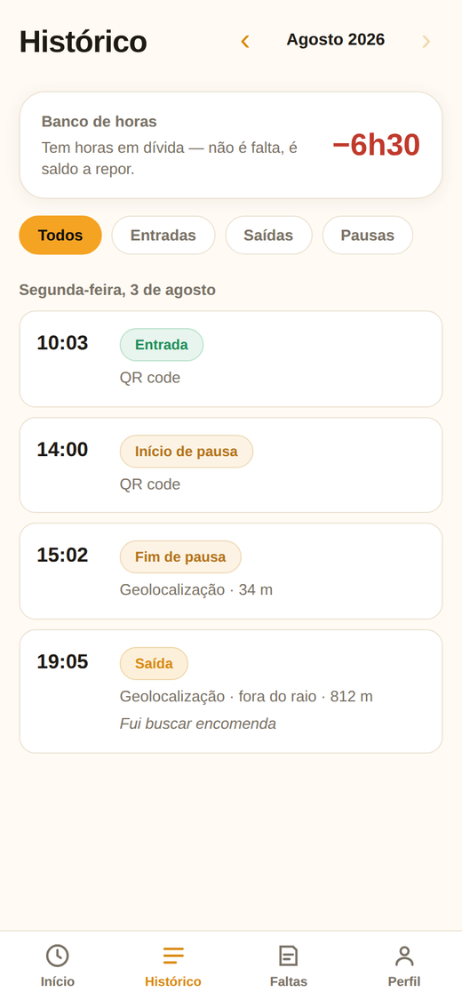
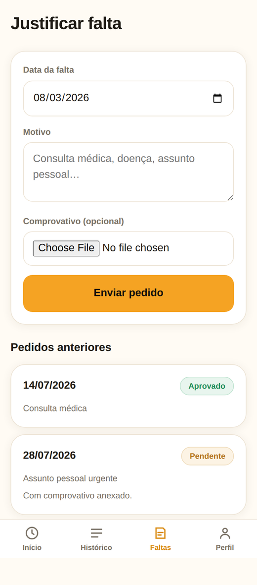
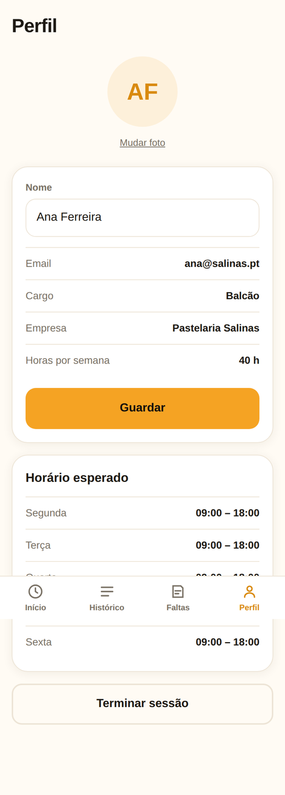
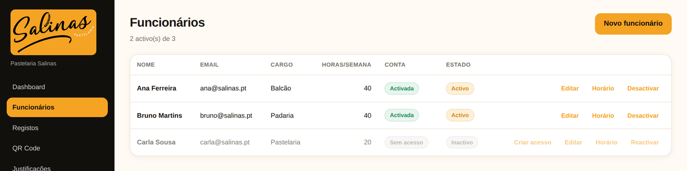
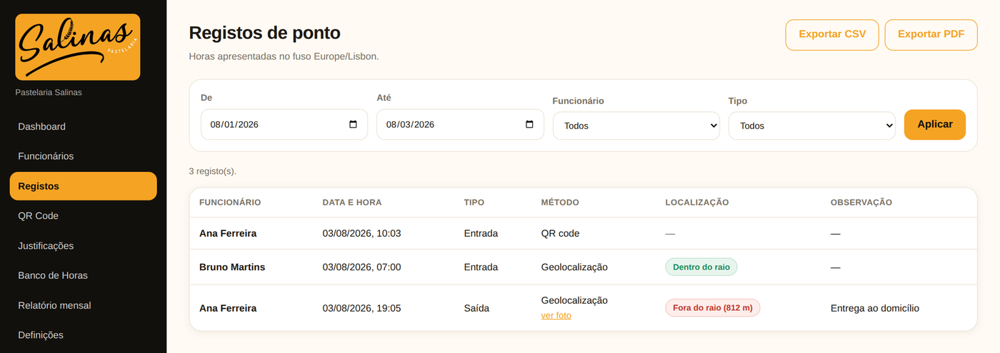
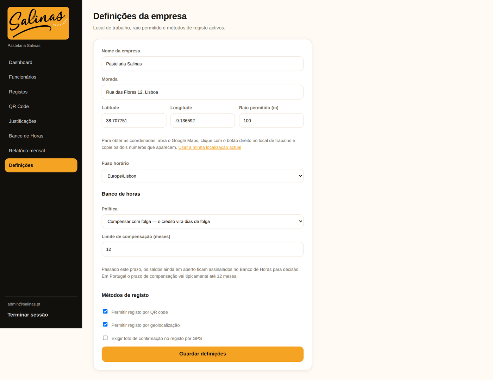

Salinas
Manual de utilização — registo de ponto
App do funcionárioanderson17quadri-cmd.github.io/Salinas/
Painel do gestoranderson17quadri-cmd.github.io/Salinas/admin/
Manual de utilização — registo de ponto
instalar, entrar e bater ponto
Abra anderson17quadri-cmd.github.io/Salinas/ no telemóvel.
Android (Chrome): três pontinhos → «Instalar aplicação».
iPhone (Safari): botão de partilha → «Adicionar ao ecrã principal».
O gestor entrega-lhe o email e uma palavra-passe (ex.: GZCV-2694-CT). Escreva os dois e toque em Entrar.

É o botão grande laranja. Por baixo diz sempre o que vai registar.

Toque em «Ler QR code» e aponte ao cartaz da pastelaria, ou em «Usar GPS».
Às vezes a app pergunta o que quer marcar — escolha e pronto.

No separador Histórico vê tudo o que marcou e o seu saldo de horas.

No separador Faltas, toque em «Nova justificação», escolha o dia e o motivo.

Mude a sua palavra-passe assim que entrar pela primeira vez.

equipa, horários e relatórios
Abra anderson17quadri-cmd.github.io/Salinas/admin/ e entre com a sua conta de gestor.
Mostra quem está ao serviço, atrasos e justificações pendentes.

Funcionários → Novo funcionário. Nome, email, cargo e horas por semana.

Clique em Criar acesso. Aparece uma palavra-passe — anote e entregue em mão.

Clique em Horário. Um clique num turno preenche de segunda a sábado.

Descarregue o cartaz A4 e afixe na pastelaria.

Vê tudo o que foi marcado, com filtros por pessoa, tipo e data.

Aprove ou recuse os pedidos de falta da equipa.

Crédito, dívida e saldo de cada pessoa. No início do mês, clique em Fechar período.

Horas trabalhadas e esperadas, por pessoa. Exportar CSV para a contabilidade.

Morada, raio do GPS, métodos de registo, regime de folgas e banco de horas.

O QR não lê. Limpe a lente ou acenda a luz. Se não resultar, use o GPS.
Diz que estou fora do raio. Bata ponto na mesma e escreva a justificação — dentro de edifícios o GPS erra.
Trabalho à noite, as horas contam bem? Sim — 18:00 às 02:00 conta sempre 8 horas.
Não bati ponto ontem, era o meu dia de folga. Não conta como falta — a folga é o próprio dia sem ponto.
Um funcionário saiu da casa. Em Funcionários, clique em Desactivar.
1. Mudar a sua palavra-passe de gestor.
2. No Supabase, apagar a chave claudinho e o token claude-setup-salinas — só serviram para instalar o projecto.
3. Pedir a cada funcionário para mudar a palavra-passe na primeira entrada.